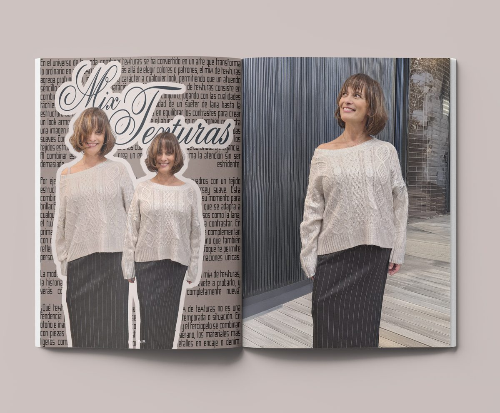

Mix de Texturas: La Clave para Elevar tu Estilo
En el universo de la moda, combinar texturas se ha convertido en un arte que transforma lo ordinario en algo extraordinario. Más allá de elegir colores o patrones, el mix de texturas agrega profundidad, interés visual y carácter a cualquier look, permitiendo que un atuendo sencillo se convierta en una declaración de estilo personal.
¿Qué significa mezclar texturas?
El mix de texturas consiste en combinar diferentes tipos de materiales en un mismo conjunto, jugando con las cualidades táctiles y visuales de cada tejido. Desde la suavidad de un suéter de lana hasta la estructura de un pantalón de cuadros, la clave está en equilibrar los contrastes para crear un look armonioso. Esta técnica no solo enriquece el atuendo, sino que también proyecta una imagen más sofisticada y pensada.
¿Por qué funciona?
Cada textura tiene su propio carácter. Las prendas suaves como el cashmere o la lana ligera transmiten confort y calidez, mientras que los tejidos estructurados como el tweed o los cuadros añaden un aire de autoridad y elegancia. Al combinar estas cualidades, se crea un equilibrio visual que llama la atención sin ser demasiado estridente.
Por ejemplo, en la imagen que inspira este artículo, un traje de cuadros con un tejido estructurado se complementa con una camisa de satén o un jersey suave. Esta combinación genera un efecto visual atractivo, donde cada material tiene su momento para brillar.
Cómo dominar el arte del mix de texturas
Equilibrio visual:
Equilibrio visual: Si una prenda tiene una textura muy pronunciada, como la lana gruesa o el terciopelo, combínala con otra más ligera, como el algodón o la seda, para evitar que el look sea recargado.
Contraste de estilos:Contraste de estilos: Mezclar prendas formales con otras casuales, como un blazer de cuadros y un suéter ligero, puede dar un aire relajado pero elegante.
La importancia del color:La importancia del color: Aunque estés jugando con texturas, asegúrate de que los colores de las prendas se complementen entre sí. Los tonos neutros como el gris, beige, blanco y negro son ideales para un mix de texturas discreto pero sofisticado.
Detalles que cuentan:Detalles que cuentan: Los accesorios también son una excelente forma de sumar texturas. Bolsos de cuero texturizado, zapatos de gamuza o pañuelos de seda añaden un toque extra de dimensión al look.
Un estilo que evoluciona contigo
El mix de texturas no es una tendencia pasajera; es una técnica que se adapta a cualquier temporada o situación. En otoño e invierno, los tejidos más gruesos como la lana, el tweed y el terciopelo se combinan con piezas de satén o seda para contrastar. En primavera y verano, los materiales más ligeros como el lino y el algodón se complementan con detalles en encaje o denim.
¿Por qué integrarlo en tu armario?
Mezclar texturas no solo eleva tu look, sino que también refleja tu capacidad de experimentar y de salir de lo convencional. Este enfoque te permite personalizar tus atuendos, expresando quién eres a través de combinaciones únicas.
La moda es, al final del día, una herramienta para contar historias. Y con el mix de texturas, la historia que cuentes será rica, interesante y llena de carácter. Atrévete a probarlo, y verás cómo cada prenda cobra vida de una manera completamente nueva.
¿Qué texturas mezclarías hoy para reinventar tu estilo?
amor y estilo,
Sandra